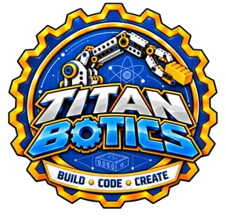

Forest rangers
Spot the sneaky plants.
Explore plant photos and help identify invasive species.
Explore plant mission
titanboticsCurrent season · 2026–27
New season. New experiments.
BIOGLOW · Our innovation project

Small observations. Shared discoveries. Our platform brings field volunteers, experts, and field users together to explore environmental challenges through photos.
Share a photo, have its label reviewed, and use checked examples to train and try a local image detector.
Try Field DetectivesForest rangers
Explore plant photos and help identify invasive species.
Explore plant missionEnvironmental experts
Explore where new seeds could help land recover after a fire.
Explore forest missionCity officials
Spot litter, sort waste, and explore blocked storm drains.
Explore city missionLearn through play
A game that introduces the ideas behind BIOGLOW Field Detectives: look for clues, label pictures, and check your predictions.
Explore three short missions about plants, wildfire clues, and blocked drains. Practice classification and see what you learned.
Play Detective AcademyBIOGLOW · 2026–27
 ▶ Watch · 1:30
▶ Watch · 1:30 ▶ Watch · 16:00
▶ Watch · 16:00Build. Test. Improve.
Listen to real needs.
Record what works.